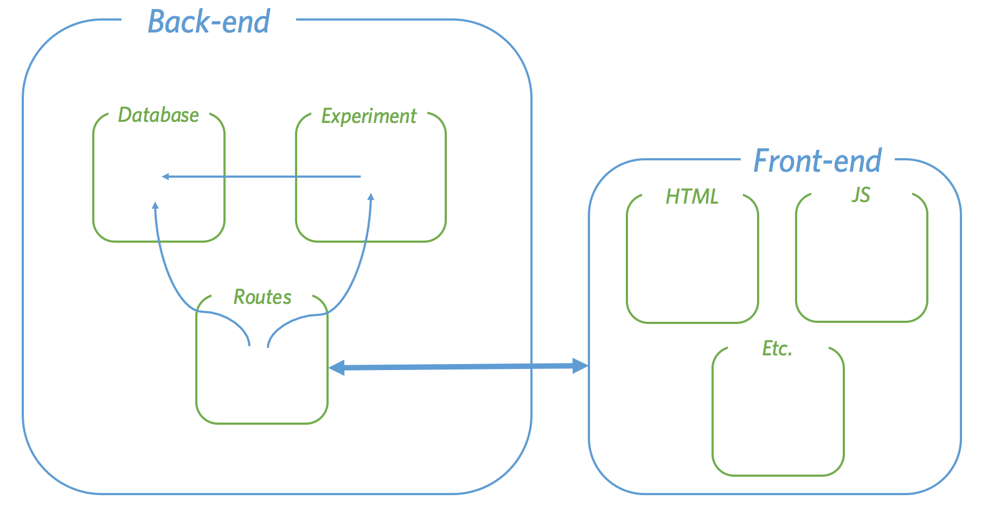

When an experiment is running, the database and the experiment class (i.e. the instructions for what to do with the database) will be hosted on a server, the server is also known as the "back-end". However, participants will take part in experiments via an interactive web-site (the "front-end"). Accordingly for an experiment to proceed there must be a means of communication between the front and back ends. This is achieved with routes:

Routes are specific web addresses on the server that respond to requests from the front-end. Routes have direct access to the database, though most of the time they will pass requests to the experiment which will in turn access the database. As such, changing the behavior of the experiment is the easiest way to create a new experiment. However it is also possible to change the behavior of the routes or add new routes entirely.
Requests generally come in two types: "get" requests, which ask for information from the database, and "post" requests which send new information to be added to the database. Once a request is complete the back-end sends a response back to the front-end. Minimally, this will include a notification that the request was successfully processed, but often it will also include additional information.
As long as requests are properly formatted and correctly addressed to routes, the back-end will send the appropriate response. This means that the front-end could take any form. For instance requests could come from a standard HTML/CSS/JS webpage, a more sophisticated web-app, or even from the experiment itself.